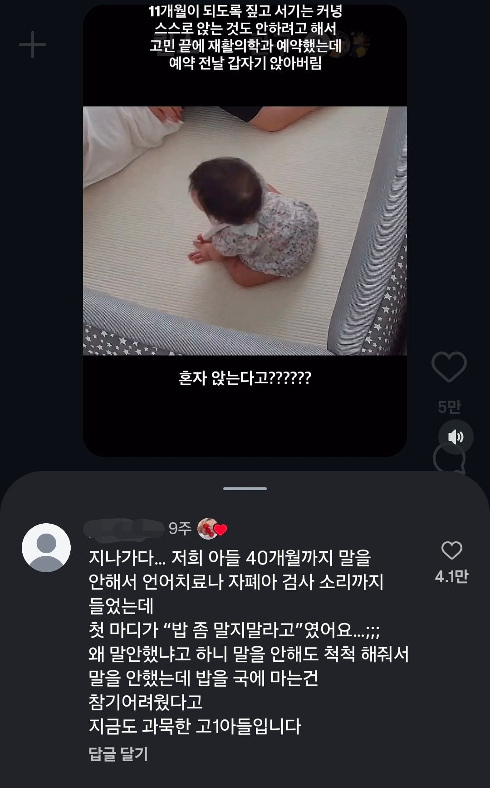

자폐아인줄 알았던 아들이 입을 연 이유
댓글
탕수육 소스 부을까?
엉
이런 씨부엉
부엉
아이씨 붙여서 고1아 이렇게 보였네 ㅋㅋ미친 ㅋㅋㅋㅋ
롤대남이 또...
커뮤니티좀 끊어라
자식한테 고1아 하는 부모가 어디있냐고ㅋㅋㅋ
고아들 ㅋㅋㅋ
"밥 똠! 마디 마라고오오!
이런거보면 뭐 발달속도 이런것도 있겠지만 걍 자기가 하고싶을때 하는것같기도 하고
말은 안해도 익히고는 있었나 ㅋㅋ
3살 남짓에 벌써 저정도면 TBC 8시 뉴스 보고 아빠랑 이미 정치토론 했을 거임.
나도..말이없었다던데
댓은 왜 주작 같지
문장 하나를 온전히 구사할 때까지 말을 안하는 애들이 종종 있음. 성향, 기질에 따라 그렇더라고
보통 완벽주의인 애들이 그럼
진짜로 저런 사례들이 종종 있다고?
그것도 정도가 있지 3살 되도록 말 한마디 안하다고 첫 말이 밥 말지 말라고 가 말이된다고 보기 어렵다
무슨 고양이야?ㅋㅋㅋ
간혹 잡고 걷는 거 스킵하고 바로 혼자 걷는 거부터 하는 애들도 있고
말도 갑자기 문장부터 하는 애들도 있음
발달 쪽 얘기 들어보면 애기들도 완벽주의 성향 있거나 하면 그런다고 함
생후 40개월 다 되도록 엄마 아빠 맘마 까까 응가 쉬야 이런 단계 싹 재끼고 첫 마디가 “밥 좀 말지 말라고” 이게 가능하다고? 왤케 주작 같지 민약 진짜면 신기하다 못해 좀 소름끼칠 정도인데ㅋㅋ
ㄹㅇ 귀신들린줄알것같은데;
엄마만 몰랐던거
아버지랑 이미 삼성 선발 보고 심각하게 회의했을걸?
아무문제 없다 나는 5살때 입이 트여서 원인을 알아보니 이 새끼가 그냥 말할 필요가 없어서 말을 안한거였음
복잡한 문장도 다 알아듣는데, 끄덕끄덕 도리도리 밖에 안 해서 혀나 성대에 이상 있나 걱정하던 조카 지금은 우등생 ㅋㅋ
우리애도 이름 불러도 쳐다보지를 않길래 좆나 걱정 했는데 그냥 관심이 없던거더라고...
애들 크는게 진짜 천차 만별이라 정형화된 틀을 기준으로 걱정하는건 의미가 없는듯
밥은 꼬슬꼬슬해야지 물에다 빠트리면 열받긴해
자기 스스로 본인 발음이 완벽하지 않거나 부끄럽다고 느껴서 말을 안하는 애기들도 있다더라
밥좀!!! 말지 말라고오~~!!!
"어..어..
어둠의 문지기와 하수인 그리고 병사들이여~"
밥을 안말았으면 언제 말문이 트였겠나..
우리 조카도 엄마아빠를 안 함. 근데 어린이집에서 배운 앉아는 기가 막히게 잘함.